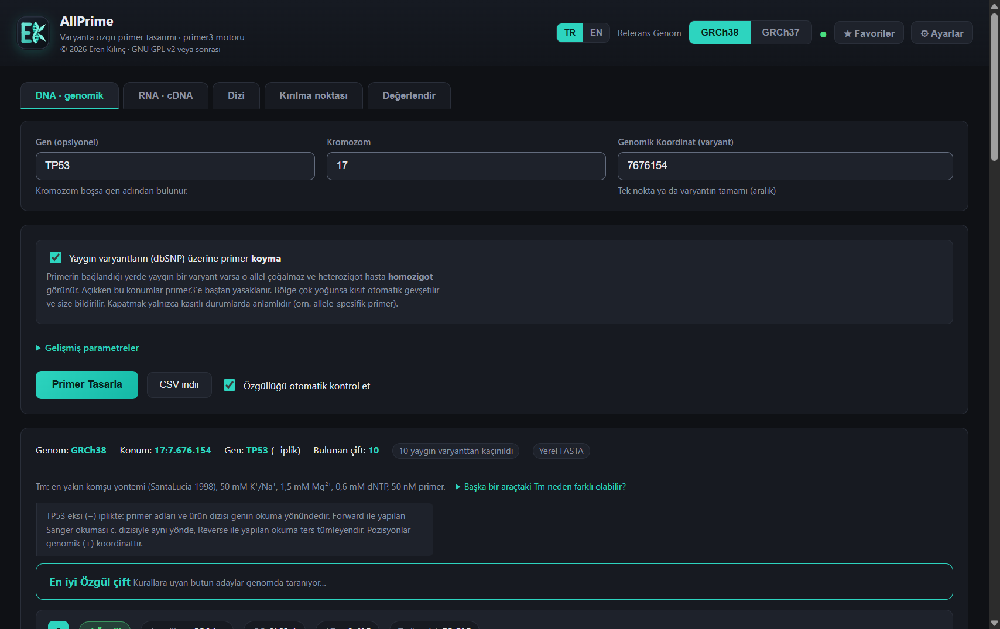
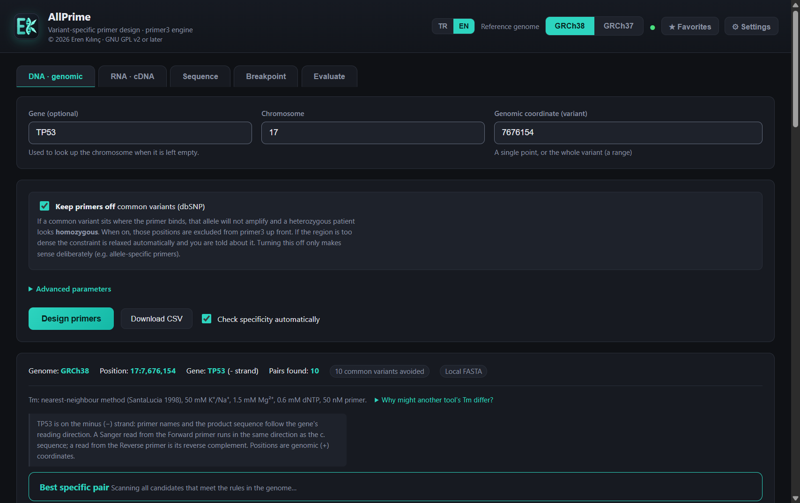
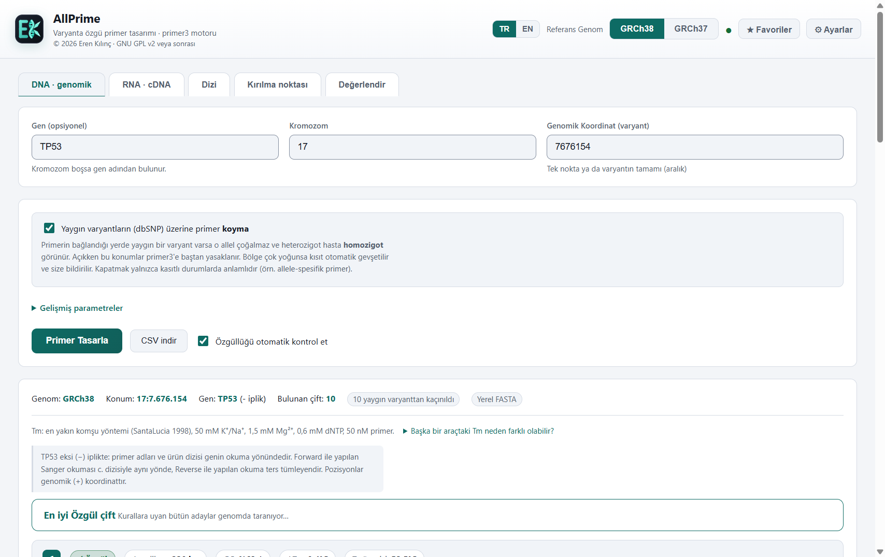
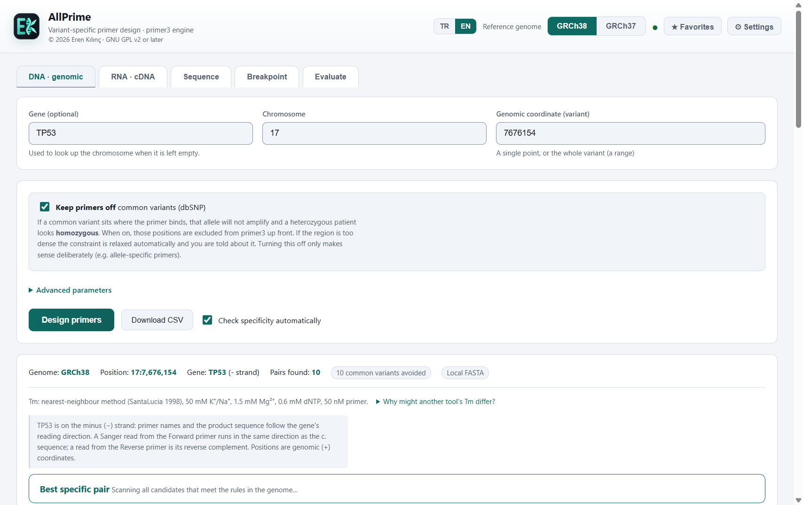
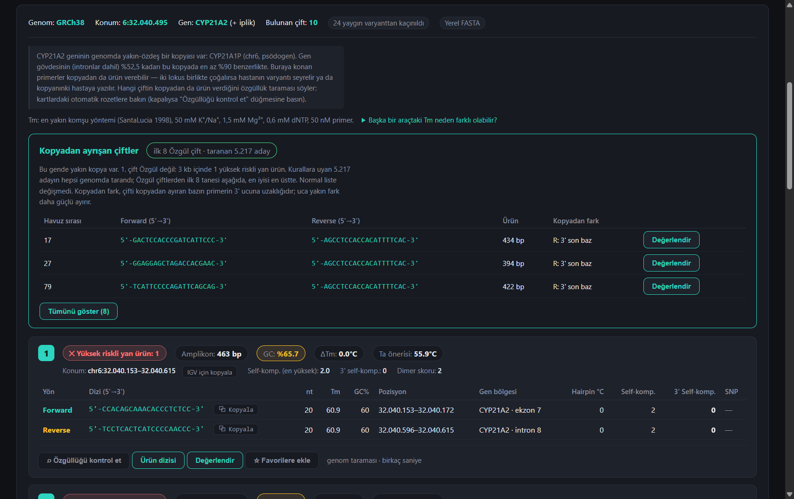
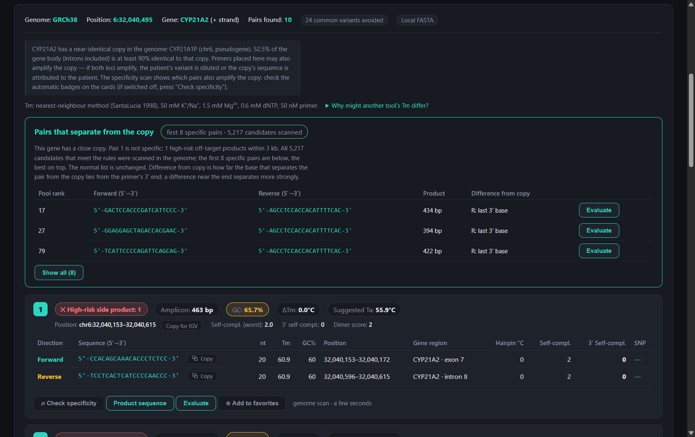
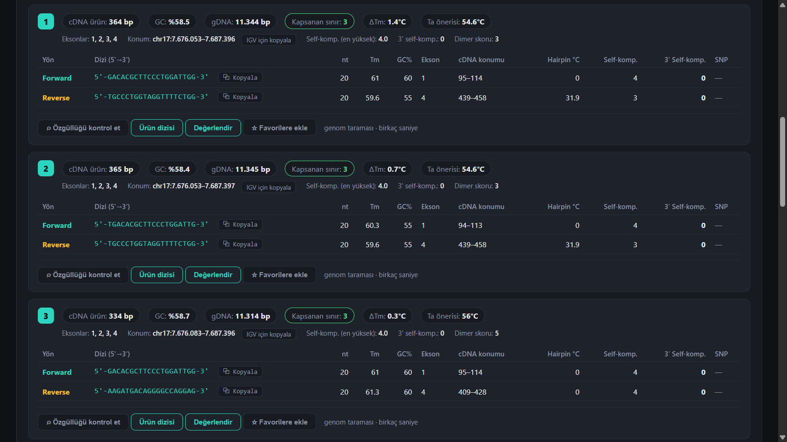
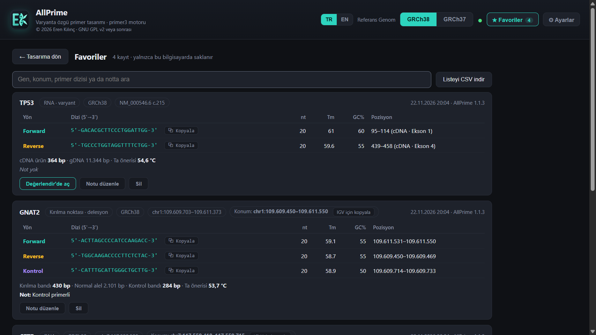
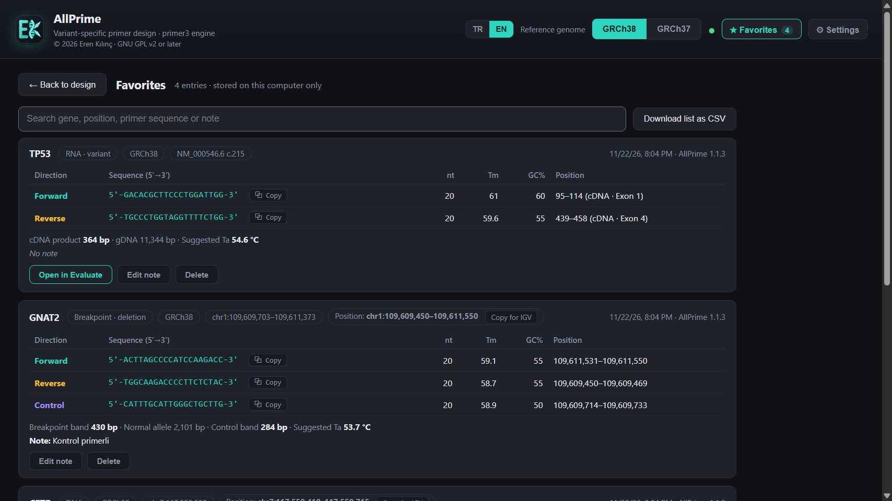

Varyanta özgü primer tasarımı, kendi bilgisayarınızdaVariant-specific primer design on your own computer
AllPrime, primer3 hesaplama motorunu kullanan bir Windows masaüstü programıdır. Genomik koordinat, transkript ya da yapıştırılan dizi üzerinde primer çifti tasarlar, delesyon ve duplikasyonlar için kırılma noktası primerleri önerir ve elinizdeki primerleri değerlendirir. Tüm hesaplama yerel makinede yapılır.AllPrime is a Windows desktop program built on the primer3 calculation engine. It designs primer pairs on a genomic coordinate, a transcript or a pasted sequence, proposes breakpoint primers for deletions and duplications, and evaluates primers you already have. All computation runs on the local machine.
- Windows 10 / 11 · 64 bit
- Referans genomReference genome GRCh38 · GRCh37
- TR / EN
- GNU GPL v2 veya sonrasıv2 or later




Bir sonuç, ölçekliOne result, to scale
TP53, chr17:7.676.154 çevresinde 330 bp'lik bir ürünA 330 bp product around TP53, chr17:7,676,154
TP53 eksi (−) iplikte olduğu için ürün genin okuma yönünde, Forward'dan başlayarak gösterilir. Girilen konum ürünün 235. bazıdır.TP53 is on the minus (−) strand, so the product is shown in the gene's reading direction, starting from the Forward primer. The entered position is base 235 of the product.
- Forward
- 5'-CGTTCTGGTAAGGACAAGGG-3' · 20 nt · Tm 57,9 °C · GC %55 · 7.676.369–7.676.388
- Reverse
- 5'-GGTAGGTTTTCTGGGAAGGG-3' · 20 nt · Tm 57,5 °C · GC %55 · 7.676.059–7.676.078
Değerler programın bu konum için verdiği bir çiftten, Favoriler ekranındaki kayıttan alınmıştır. Program çıktısıdır; laboratuvarda doğrulanmış bir sonuç değildir.Values are taken from a pair the program gave for this position, as saved on the Favorites screen. This is program output, not a laboratory-validated result.
SekmelerTabs
Beş sekme, beş işFive tabs, five jobs
-
DNA · genomikDNA · genomic
Genomik koordinat verilir, primerler doğrudan genom üzerinde tasarlanır. Tek koordinat (nokta varyant) ya da aralık (varyantın tamamı) yazılabilir; aralık verilince primerler aralığın ve iki yandaki payın dışına konur.
You give a genomic coordinate and primers are designed directly on the genome. Enter a single coordinate (point variant) or a range (the whole variant); with a range, primers are placed outside it and outside a margin on each side.
-
RNA · cDNA
Transkript kodu (NM_) verilir, şablon intronsuz cDNA'dır. NM kodunu bilmiyorsanız gen sembolüyle arayabilirsiniz; MANE Select transkript işaretli gelir. İki tasarım tipi vardır: Varyant (c.) ve Ekson atlama testi. İkisinde de Primer ekson sınırının üzerine otursun seçeneğiyle primerlerden biri iki eksonun birleştiği yere konabilir; böyle bir çift genomik DNA'dan ürün vermez ve kartta gDNA: çoğalmaz yazar. Öbür çiftlerde gDNA'daki ürün boyu gösterilir. Bu sekme transkripti her zaman GRCh38 genomundan kurar.
You give a transcript accession (NM_); the template is intron-free cDNA. If you do not know the NM accession you can search by gene symbol; the MANE Select transcript is flagged. There are two design types: Variant (c.) and Exon skipping assay. Both have a Place one primer across an exon junction option that puts one primer where two exons join; such a pair gives no product from genomic DNA and its card says gDNA: no product. For other pairs the gDNA product size is shown. This tab always builds the transcript from the GRCh38 genome.
-
DiziSequence
Genom ya da transkript gerekmez; diziyi doğrudan yapıştırırsınız. Tek dizi modunda hedef köşeli parantezle ya da konumla işaretlenebilir. İki dizi (F / R bölgesi) modunda forward primer birinci, reverse primer ikinci dizinin içinden seçilir; füzyon transkripti bu modla tasarlanır.
No genome or transcript is needed; you paste the sequence. In Single sequence mode the target can be marked with square brackets or a position. In Two sequences (F / R regions) mode the forward primer is chosen from the first sequence and the reverse primer from the second; fusion transcripts are designed this way.
-
Kırılma noktasıBreakpoint
Delesyon ya da duplikasyonun sınırları girilir. Delesyonda primerler silinen bölgenin iki yanına konur (gap-PCR); tandem duplikasyonda bölgenin içine, dışa bakacak şekilde. Sınırlar MLPA, array ya da ekzom gibi yaklaşık bir yöntemden geliyorsa ± bp belirsizlik girilebilir. İsteğe bağlı bir kontrol primeri (3. primer) eklenebilir. Her çift için genotipe göre beklenen bantlar tabloda gösterilir.
You enter the boundaries of a deletion or duplication. For a deletion the primers flank the deleted region (gap-PCR); for a tandem duplication they sit inside the region, facing outward. If the boundaries come from an approximate method such as MLPA, array or exome, a ± bp uncertainty can be entered. An optional control primer (3rd primer) can be added. The expected bands for each genotype are shown in a table for every pair.
-
DeğerlendirEvaluate
Elinizdeki bir primer çiftini inceler, yeni primer tasarlamaz: DNA (genomik) ya da RNA / cDNA modunda genomda nereye oturduğunu, ne ürün vereceğini ve vermiyorsa nedenini söyler. Sonuç üç düzeyli bir kararla başlar: Sorun görünmüyor, Dikkat edilmesi gerekenler var ya da Ciddi sorun var.
Examines a primer pair you already have; it does not design new primers. In DNA (genomic) or RNA / cDNA mode it tells you where the primers sit in the genome, what product they will give, and if they give none, why. The result opens with a three-level verdict: No problems found, Points to watch or Serious problem.
DenetimlerChecks
Tasarımla birlikte yapılan kontrollerChecks that come with each design
- Yaygın varyant (dbSNP) kaçınmasıCommon-variant (dbSNP) avoidance
- Primerin bağlandığı yerde yaygın bir varyant varsa o allel çoğalmaz ve heterozigot hasta homozigot görünür. Program bu konumları tasarım sırasında otomatik olarak devre dışı bırakır. Bölge çok yoğunsa kısıt gevşetilir ve bu sonuçların üstünde bildirilir.If a common variant sits where a primer binds, that allele does not amplify and a heterozygous patient looks homozygous. The program excludes these positions automatically during design. If the region is too dense, the constraint is relaxed and you are told so above the results.
- Genom çapında özgüllük kontrolüGenome-wide specificity check
- Her sonuç kartındaki ⌕ Özgüllüğü kontrol et düğmesi, çiftin genomda istenmeyen ürün verip vermediğini yerel genom dosyası üzerinde tarar. DNA modunda çiftler arka planda otomatik taranır ve kartlara Özgül, Orta riskli yan ürün ya da Yüksek riskli yan ürün rozeti eklenir. Rozetler yalnızca işarettir: hiçbir çift atılmaz, sıralama değişmez.The ⌕ Check specificity button on each result card scans the local genome file for unwanted products of the pair. In DNA mode the pairs are scanned automatically in the background and each card gets a Specific, Medium-risk side product or High-risk side product badge. Badges are only markers: no pair is removed and the order does not change.
- Psödogen / yakın-özdeş kopya uyarısıPseudogene / near-identical copy warning
- PMS2/PMS2CL ya da CYP21A2/CYP21A1P gibi neredeyse birebir kopyası olan bir gende çalıştığınızda sonuçların üstünde kopyanın adı, kromozomu ve benzerlik oranıyla bir uyarı çıkar. DNA tasarımında kurallara uyan bütün adaylar genomda taranır ve kopyadan ayrışan Özgül çiftler Kopyadan ayrışan çiftler bölümünde listelenir. Uyarı bir hüküm değildir; bu genlerde ürünü Sanger ile okuyup hangi kopyadan geldiğini kontrol edin.When you work on a gene with a near-identical copy, such as PMS2/PMS2CL or CYP21A2/CYP21A1P, a warning above the results names the copy, its chromosome and the similarity. In DNA design every candidate that meets the rules is scanned in the genome, and specific pairs that separate from the copy are listed under Pairs that separate from the copy. The warning is not a verdict; for these genes, read the product by Sanger and check which copy it came from.
- Primer genin neresinde (ekzon / intron)Where the primer sits in the gene (exon / intron)
- DNA ve Kırılma noktası sekmelerinde her primerin yanında Gen bölgesi sütunu ekzon, intron ya da ikisinin sınırını yazar. Program MANE Select transkripti tercih eder.In the DNA and Breakpoint tabs, a Gene region column next to each primer gives the exon, the intron or the boundary between them. The program prefers the MANE Select transcript.


Görüntüyü yana kaydırınScroll the image sideways
EkranlarScreens
Sonuç kartlarıResult cards
Programdan alınmış ekran görüntüleri, koyu tema.Screenshots taken from the program, dark theme. The cards below show the Turkish interface.

Görüntüyü yana kaydırınScroll the image sideways

Görüntüyü yana kaydırınScroll the image sideways

Görüntüyü yana kaydırınScroll the image sideways

Görüntüyü yana kaydırınScroll the image sideways


Görüntüyü yana kaydırınScroll the image sideways
KurulumInstallation
Üç adımda çalışırRunning in three steps
-
Zip'i indirin, doğrudan Yerel Disk (C:) içine açınDownload the zip and extract it directly onto the local disk (C:)
Yukarıdaki İndir düğmesinin açtığı sayfada iki zip vardır; program ikisinde de aynıdır:
AllPrime-<sürüm>-win-x64.zip(yaklaşık 360 MB; genomlar program içinden indirilir) veAllPrime-<sürüm>-win-x64-with-genomes.zip(yaklaşık 1,9 GB; GRCh38 ve GRCh37 genomları içindedir). Birini indirin ve doğrudan Yerel Disk (C:) içine açın; programC:\AllPrime\klasöründe olur. Masaüstü ya da Belgeler gibi OneDrive ile eşitlenen bir klasöre açmayın: orada program açılmayabilir. Bozulan kopyayı başka yere taşımak düzeltmez; zip'i doğrudan Yerel Disk (C:) içine yeniden açın. Açma tamamen bitmeden programı çalıştırmayın. Kurulum programı yoktur; program klasörden çalışır.The page the Download button opens has two zips; the program is the same in both:AllPrime-<version>-win-x64.zip(about 360 MB; the genomes are downloaded from within the program) andAllPrime-<version>-win-x64-with-genomes.zip(about 1.9 GB; the GRCh38 and GRCh37 genomes are included). Download one and extract it directly onto the local disk (C:); the program will be inC:\AllPrime\. Do not extract it into a folder synced by OneDrive, such as Desktop or Documents: the program may fail to start there. Moving a broken copy elsewhere does not fix it; extract the zip again, directly onto the local disk (C:). Do not run the program before extraction has finished. There is no installer; the program runs from the folder. -
AllPrime.exe ile başlatınStart AllPrime.exe
Program imzalı olmadığı için Windows ilk açılışta bir uyarı gösterebilir. İlk açılışta pencerenin gelmesi 20–50 saniye sürebilir; bu sırada ekranda bir şey görünmez. Sonraki açılışlar birkaç saniye sürer.The program is not code-signed, so Windows may show a warning on first launch. On first launch the window may take 20–50 seconds to appear, with nothing on screen meanwhile. Later launches take a few seconds.
-
Genomu indirinDownload the genome
Genomlu paketi indirdiyseniz bu adım gerekmez. Genomsuz pakette, programda ⚙ Ayarlar › Veri dosyaları (indirme) bölümünden kullanacağınız genom derlemesini indirin (her biri yaklaşık 3 GB; kaynağı Ensembl) ya da genom dosyalarını, yanlarındaki
.faiindeks dosyalarıyla birlikte,AllPrime.exe'nin yanındakigenomesklasörüne elle kopyalayın. Transkript tabloları ve yaygın varyant dizinleri paketle birlikte gelir. Program bir genomu kullanmadan önce denetler; eksik ya da kesik bir genom kullanılmaz, nedeni Ayarlar'da yazılır.The package with genomes does not need this step. With the package without genomes, in the program, download the genome assembly you need from ⚙ Settings › Data files (download) (about 3 GB each; source: Ensembl), or copy the genome files by hand, together with their.faiindex files, into agenomesfolder next toAllPrime.exe. Transcript tables and common-variant indexes come with the package. The program checks a genome before using it; a missing or truncated genome is not used, and the reason is shown in Settings.
Ayrıntılı kurulum ve kullanım kılavuzu paketin içindedir: KURULUM.txt (Türkçe) ve USER_GUIDE.txt (İngilizce).The detailed installation and user guide is inside the package: USER_GUIDE.txt (English) and KURULUM.txt (Turkish).
Kayıt ve arayüzRecords and interface
Sonucu saklamak, taşımak, okumakKeeping, moving and reading results
- FavorilerFavorites
- Her tasarım kartında ve Değerlendir sonucunda ☆ Favorilere ekle düğmesi vardır; isteğe bağlı bir not eklenebilir. Liste gen, konum, primer dizisi ve notta aranır, Değerlendir'de aç ile yeniden değerlendirilir, Listeyi CSV indir ile dışa aktarılır. Kayıtlar yalnızca bu bilgisayarda saklanır.Every design card and every Evaluate result has an ☆ Add to favorites button; an optional note can be added. The list can be searched by gene, position, primer sequence and note, re-evaluated with Open in Evaluate, and exported with Download list as CSV. Entries are stored on this computer only.
- IGV için kopyalaCopy for IGV
- DNA, RNA ve Kırılma noktası kartlarının ikinci satırında primerlerin kapsadığı genomik aralık yazar; düğme bu aralığı IGV'nin arama kutusunun anladığı biçimde kopyalar (örn.
chr7:117559410-117559715).The second line of DNA, RNA and Breakpoint cards gives the genomic range the primers cover; the button copies it in a form the IGV search box understands (e.g.chr7:117559410-117559715). - CSV
- Sonuçlar CSV indir ile dışa aktarılır. CSV başlıkları seçilen dilde gelir; DNA, RNA ve Kırılma noktası dosyalarının son iki sütunu derleme ve kromozomdur.Results are exported with Download CSV. CSV headers follow the chosen language; the last two columns of DNA, RNA and Breakpoint files are the assembly and the chromosome.
- Türkçe ve İngilizceTurkish and English
- Üst bardaki TR / EN ile değişir. Arayüzün tamamı, hata mesajları, uyarı notları ve CSV başlıkları seçilen dilde gelir. Ayrıntılı kılavuz da iki dildedir.Switched with TR / EN in the top bar. The whole interface, error messages, warning notes and CSV headers follow the chosen language. The detailed guide comes in both languages too.
- Tema ve arayüz boyutuTheme and interface size
- Tema: Koyu, Açık ya da Windows'a uy. Arayüz boyutu %90 ile %150 arasında ayarlanır; yazılar, düğmeler ve tablolar birlikte büyür.Theme: Dark, Light or Follow Windows. Interface size can be set from 90% to 150%; text, buttons and tables scale together.
- Laboratuvar varsayılanlarıLaboratory defaults
- Açılıştaki referans genom, çoğaltılabilen en uzun ürün ve gelişmiş parametreler (Mg²⁺, tuz, dNTP, DMSO, primer boyu, Tm …) laboratuvar varsayılanı olarak saklanabilir. Ayarlar yalnızca bu bilgisayarda saklanır.The start-up reference genome, the longest amplifiable product and the advanced parameters (Mg²⁺, salt, dNTP, DMSO, primer length, Tm …) can be saved as laboratory defaults. Settings are stored on this computer only.
Veri ve gizlilikData and privacy
Hesaplama yerel, veri dosyaları program içindenLocal computation, data files from inside the program
GizlilikPrivacy
- Tüm hesaplamalar yerel makinede yapılır. Veri dosyaları bilgisayarda olduktan sonra çalışmak için internet gerekmez; yalnızca dosyaları indirirken gerekir.All computation runs on the local machine. Once the data files are on the computer, no internet connection is needed to work; it is needed only to download the files.
- Yerel genom tanıtılmamışsa dizi çekmek için Ensembl REST API kullanılabilir; bu durumda genomik koordinat sorgulanır. Transkript tablosu da tanıtılmamışsa ve konum gen sembolüyle verilmişse gen sembolü de sorgulanır. Hasta verisi gönderilmez.If no local genome is configured, the Ensembl REST API may be used to fetch sequence; in that case a genomic coordinate is queried. If the transcript table is not configured either and the position is given as a gene symbol, the gene symbol is queried as well. No patient data is transmitted.
- Genom tanıtılmamışsa özgüllük kontrolü yapılamaz.Without a local genome the specificity check cannot run.
- Favoriler, ayarlar ve açılış bildiriminin gösterildiği kaydı yalnızca bu bilgisayarda saklanır.Favorites, settings and the record that the start-up notice was shown are stored on this computer only.
Veri kaynaklarıData sources
- Referans genom dizileri:Reference genome sequences: Ensembl (GRCh37 / GRCh38)
- Transkript ve ekson yapısı:Transcript and exon structure: UCSC refGene (NCBI RefSeq türevi)(derived from NCBI RefSeq)
- Kanonik transkript işaretlemesi:Canonical transcript flags: NCBI MANE
- Yaygın varyantlar:Common variants: UCSC snp151Common (NCBI dbSNP b151 türevi)(derived from NCBI dbSNP b151)
Sistem gereksinimiSystem requirements
- İşletim sistemi: Windows 10 ya da 11, 64 bit. Windows 11'de ve Windows 10'da denendi.Operating system: Windows 10 or 11, 64-bit. Tested on Windows 11 and Windows 10.
- RAM: önerilen 8 GB, en az 4 GB. 4 GB RAM'li bir Windows 10 bilgisayarda DNA, RNA ve kırılma noktası (duplikasyon) tasarımları çalıştı; genom taraması daha uzun sürdü; orada bellek ölçülmedi.RAM: 8 GB recommended, 4 GB minimum. On a 4 GB Windows 10 computer, DNA, RNA and breakpoint (duplication) designs worked; the genome scan took longer; memory was not measured there.
- Disk: 8 GB boş yer önerilir.Disk: 8 GB of free space recommended.
Veri dosyalarıData files
Program içinden indirilir: ⚙ Ayarlar › Veri dosyaları (indirme). Genomlar Ensembl'den, diğerleri UCSC/NCBI'dan iner; indirme kaldığı yerden devam eder. Dosyalar elle de kopyalanabilir. Genomlu pakette iki genom hazır gelir.Downloaded from inside the program: ⚙ Settings › Data files (download). Genomes come from Ensembl, the other files from UCSC/NCBI; an interrupted download resumes where it stopped. The files can also be copied in by hand. The package with genomes already contains both genomes.
| KalemItem | BoyutSize |
|---|---|
| Kurulu uygulamaInstalled program | 0,4 GB |
| Genom FASTA, her derlemeGenome FASTA, per assembly | 3,15 GB |
| dbSNP yaygın varyant dizini, her derlemedbSNP common-variant index, per assembly | 0,14 GB |
| refGene (iki derleme) + MANE özetirefGene (both assemblies) + MANE summary | 0,02 GB |
| İki derleme ve bütün verilerBoth assemblies and all data | yaklaşıkabout 7,0 GB |
Bilgilendirme ve sorumlulukNotice and disclaimer
- AllPrime, laboratuvar içi kullanım için geliştirilmiş bir primer tasarım aracıdır. Hasta verisi yorumlamaz, tanı sonucu üretmez ve bir kişi hakkında değerlendirme yapmaz. Bu yazılım bir in vitro tanı (IVD) tıbbi cihazı değildir ve bu amaçla herhangi bir uygunluk değerlendirmesinden geçmemiştir.AllPrime is a primer design tool developed for use within a laboratory. It does not interpret patient data, does not produce a diagnostic result, and makes no assessment about any individual. This software is not an in vitro diagnostic (IVD) medical device and has not undergone any conformity assessment for that purpose.
- Yazılımın ürettiği primerlerin, tanı amaçlı kullanılmadan önce kullanıcı laboratuvarı tarafından deneysel olarak doğrulanması gerekir; yazılım bu amaç için doğrulanmamıştır. Özgüllük taraması ve yaygın varyant (dbSNP) kaçınması yardımcı kontrollerdir; deneysel doğrulamanın yerini tutmazlar.Primers produced by this software should be experimentally validated by the user's laboratory before any diagnostic use; the software has not been validated for that purpose. The specificity scan and common-variant (dbSNP) avoidance are supporting checks; they do not replace experimental validation.
- Bu yazılım geliştirildiği laboratuvarın iş akışına göre hazırlanmıştır ve başka laboratuvarlarda doğrulanmamıştır. Yazılımı kullanan her laboratuvar, sonuçları kendi koşullarında deneysel olarak doğrulamaktan sorumludur.This software was built around the workflow of the laboratory where it was developed and has not been validated in other laboratories. Each laboratory using it is itself responsible for experimentally validating the results under its own conditions.
- Sonuçlar, kullanılan referans genom ve annotasyon sürümlerine bağlıdır. GRCh37 (hg19) ve GRCh38 (hg38) koordinatları birbirinden farklıdır.Results depend on the reference genome and annotation versions in use. GRCh37 (hg19) and GRCh38 (hg38) coordinates differ.
- Yazılım “olduğu gibi” sunulmaktadır. Açık ya da örtülü hiçbir garanti verilmez.The software is provided “as is”, without warranty of any kind, express or implied.
Atıf ve iletişimCitation and contact
Atıf yapmak, soru sormak, hata bildirmekCiting, asking and reporting a bug
AtıfCitation
Çalışmanızda AllPrime'ı kullandıysanız lütfen atıf yapın. Önerilen biçim:If you use AllPrime in your work, please cite it. Suggested form:
Kılınç E. AllPrime: a desktop program for variant-specific PCR primer design (kullandığınız sürümthe version you used). Zenodo; 2026. https://doi.org/10.5281/zenodo.24444832
Bu DOI bütün sürümleri kapsar ve her zaman en son sürüme gider.This DOI covers all versions and always resolves to the latest one.
İletişimContact
- Soru, öneri ve hata bildirimi:Questions, suggestions and bug reports: eren.501kilinc@gmail.com
- Hata bildirirken hasta adı ya da kimliği gibi kişisel veri göndermeyin; programın sürüm numarasını ve hatayı veren girdiyi yazmanız yeterlidir.When reporting a bug do not send personal data such as a patient name or identifier; the program's version number and the input that gave the error are enough.
- Kaynak kod ve sürümler:Source code and releases: github.com/allprime-app/AllPrime
LisansLicence
Özgür yazılım, kaynak kodu birlikteFree software, source included
AllPrime, GNU GPL sürüm 2 ya da (isteğinize göre) daha sonraki bir sürümü ile lisanslıdır ve hiçbir garanti olmaksızın sunulur. Paketli motor Apache-2.0 lisanslı bileşenler (requests, OpenSSL) içerdiğinden derlenmiş program, bunlarla uyumlu olan GPL v3 koşullarıyla dağıtılır. Kaynak kod GitHub'da açıktır ve program klasöründe de birlikte gelir. Hesaplama motoru primer3 / primer3-py'dir (GNU GPL v2 veya sonrası).AllPrime is licensed under the GNU GPL version 2 or (at your option) any later version and comes with no warranty. Because the bundled engine includes Apache-2.0 components (requests, OpenSSL), the compiled program is distributed under the compatible GPL v3 terms. The source code is public on GitHub and is also included in the program folder. The calculation engine is primer3 / primer3-py (GNU GPL v2 or later).